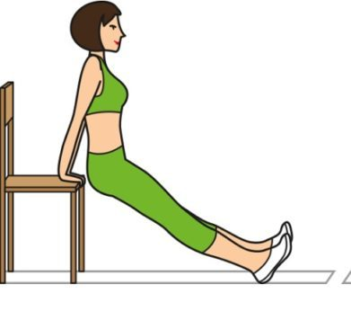
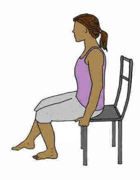
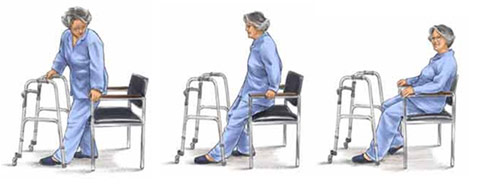

Самые простые упражнения для инвалидов
Существует огромное количество упражнений для немногих людей с
ограниченными возможностями и столько же способов адаптировать их в
соответствии с потребностями людей с инвалидностью.
Всегда совершенствоваться — это
единственный способ стать мастером. Имейте в виду, что увеличение
повторений улучшит вашу выносливость, а увеличение веса улучшит вашу
силу. Решите, на каком из вариантов вы хотели бы сосредоточиться и достичь
своей цели.
Внимание: все
упражнения делаются мягко, плавно, исключая рывки. Перед занятиями
проконсультируйтесь со специалистом.
Упражнения для
инвалидов-спинальников
1.
Разогреваем и растягиваем мышцы шеи. Сидя в коляске, поворачиваем головой
влево-вправо по 10 раз. Движения очень плавные без
рывков. Далее совершаем наклоны головой — стремимся к плечу 10 раз,
вперед-назад 10 раз. Заканчиваем полукруговыми движениями по 5 в каждую
сторону (если кружится голова, уменьшите количество движений или вообще
оставьте их).
2.
Теперь во внимании руки. Вращаем кисти рук, затем вращаем предплечья,
заканчиваем вращением всей рукой. Можно присоединить плечевые вращения, когда
руки опущены вниз.
3.
Переплетаем пальцы, вывернем переплетение и тянемся к
потолку вывернутыми руками.
4.
Сидя в коляске, ложимся так, чтобы грудь располагалась на коленях. В это
время сцепляем руки за спиной и поднимаем как можно выше — 5-6 раз.
5.
Упражнения-наклоны из положения «сидя», к положению «грудь на колени, руки
за спиной». При каждом наклоне тянемся верхней частью тела вперёд, затем можно
задерживаться в таком состоянии на несколько секунд.
6.
Сидим прямо. Согнутая рука заводится за затылок и опускается вдоль
спины, стремясь как можно ниже. Каждой рукой до 8 раз.
7.
Схожее упражнение — сидя в коляске, заводится
согнутая рука снизу спины как можно выше. Также до 8 раз. При достаточной
тренировке можно сцеплять руки в замок.
8.
Упражнения для растяжки мышц верхней части спины — наклоны. Плечи опускаются по
очереди, пальцы той руки, плечо которой опущено, находятся на оси колеса.
Совершаем при этом наклоны головой в противоположную сторону, как будто хотим
перевернуть коляску набок.
9.
Упражнение с небольшим весом — нужны гантели примерно по 2 кг. Берём
гантели и опускаем их между ног, чтобы большие пальцы, указывали на пол. Далее
по диагонали разводим руки в стороны и поднимаем гантели до уровня плеч.
Далее
рассмотрим 3 упражнения, которые рекомендуется выполнять после разминки (можно
использовать написанную выше разминку упражнения 1-8). Для каждого упражнения
вы выбираете три подхода. Повторяйте упражнение каждые 10 раз без
остановки, а затем отдыхайте от 30 секунд до 1 минуты. Повторите еще 10
раз, отдохните снова и повторите в третий раз. В большинстве случаев
постарайтесь оставить 48 часов между тренировками, чтобы дать полностью
отдохнуть мышцами и суставами. Напряженные ткани требуют времени для
восстановления!
Сидящие
трицепсовые провалы
Это
упражнение усилит ваши трицепсы, грудную клетку и переднюю часть
плеч. Укрепление этих частей человеческого тела будет особенно полезно,
если есть возможность расстаться с инвалидным креслом.
Упражнение
подходит для инвалидов, имеющих силу в верхней части тела.
Сидя,
положите руки на подлокотники кресла-коляски или другого кресла. Убедитесь, что
они находятся прямо под вашими плечами. Поднимитесь вверх, пока руки не будут
полностью вытянуты, а затем медленно опустите себя вниз, пока вы снова не
усядетесь.

Модификация
Если
у вас не хватает силы руки, но есть сила в ногах, вы можете использовать их,
чтобы немного помочь себе. Но постарайтесь, чтобы ваши руки выполняли как
можно большую часть работы. Начните с небольшого количества повторений
(возможно даже 1-2), постепенно мышцы будут крепнуть, и вы сможете увеличить
число повторов.
Колено
поднимается
Это
отличный способ укрепить сгибатели бедра — мышцы вокруг бедра, которые помогут
ему двигаться, — и, следовательно, облегчить перенос, ходьбу и сгибание.
Упражнение
подходит для инвалидов с некоторым контролем над нижней частью тела.
Сидя,
поднимите одно колено вверх, пока ваша нога не окажется в нескольких
сантиметрах от земли. Опустите медленно и также повторите. После того, как вы
завершили повторы на одной ноге, повторите это на другой.

Модификация
Если
вы изо всех сил пытаетесь полностью снять свою ногу с пола, можете использовать
икроножную мышцу, чтобы согнуть лодыжку, которая поможет движению. Будьте
осторожны, чтобы не дать икрам выполнять всю работу.
Сидеть
и ходить
Для
тех, кому нужно практиковать ходьбу, это упражнение идеально. Преимущества
двойные. Сидячие упражнения укрепляют ноги, а короткая прогулка после
этого служит для тренировки ожидаемой уверенной ходьбы.
Подходит
для инвалидов с некоторым контролем над нижней частью тела.
Начните
с двух стульев, расположенных на некотором расстоянии друг от друга, но держите
их лицом друг к другу. Сидя в одном из них, выполните любые доступные сидячие
упражнения, укрепляющие ноги (например, предыдущее). Затем, поднявшись,
подойдите к другому стулу. Повернитесь, сядьте на второй стул, затем снова
встаньте и вернитесь к первому стулу.
Модификация
Упражнение
может быть сделано с помощью костылей, ходунков или помощника до тех пор, пока
не будут наблюдаться постепенные улучшения. После чего помощь уменьшается. Вы
также можете менять расстояние стульев.
